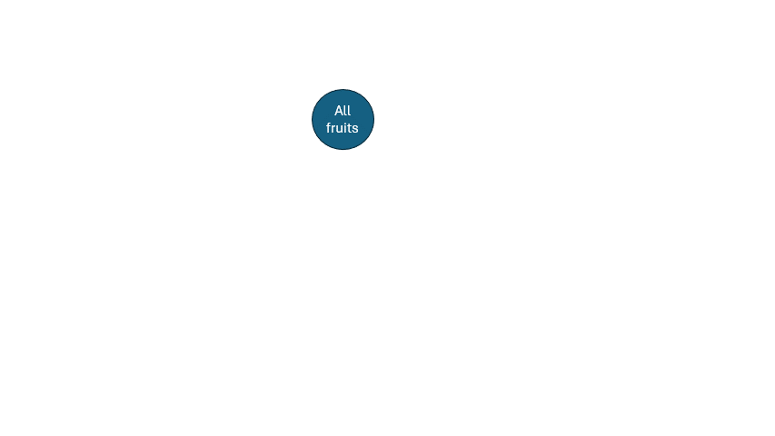

Decision Trees
Decision Trees are one of the fundamental ways of solving classification problems. It is rule based, and as the name suggestes, like a tree. So, we divide each node of a tree based on some feature and get one step closer towards predicting classes. We will dive deeper into the process, but before that if you don't have idea about tree data structure, it's a good time to pause and read about it.
Example:Let's Walk Through a Tree
Imagine you have a dataset of fruits , and you want to classify them as Apple, Banana, Watermelon or Guava. And to classify we know the shape, size and colour of fruits. We can build a decision tree to classify them based on their features.
Step 1: Colour
Since, we know we classify by rules. So, to think about it there is one rule that can separate out watermelon and guava from the rest. Guessed it? yes, the colour.Step 2: Shape
Now, we are left with apple and banana. And we know that apple is round and banana is long. So, we can build a decision tree to classify them based on their features.Step 3: Guava and Watermelon Paradox
In left node, we are left with Guava and Watermelon. And we know that guava is small and watermelon is large. So, we can build a decision tree to classify them based on their features.The whole decision tree will look something like this:

Technical:Let's Get Real with Maths and Intution
I said we predict classes through rule-based decisions, but those rules are not exactly arbitrary or
completely out of guesses. In practice it's still a guess, just not by any human. We rely on
mathematical guesses. And to determine the best rule, we go through a series of mathematical
calculations. Let's dive into it.
Before we start, we need some other knowledge as well.
Entropy
We probably read some things about entropy in our physics textbooks, where entropy represents
chaos
in the system. In mathematics, the idea is not very far.
Entropy represents the uncertainty of class distribution in a node.
For example, consider in a node we have 5 apples and 5 bananas. Then the entropy is 1, since the
uncertainty
is very high. Anytime you pick a fruit at random, there is a highly uncertain prediction of what's
getting
picked.
However, for a node with 10 apples and 2 bananas, the entropy is less, since the uncertainty is very
low.
Anytime
you pick a fruit at random, there is a highly certain prediction of apple coming up.
Mathematically, we will define entropy as:
Let's take a moment to think about it. Since, it is a negative function, and $\log_2 P(Y=y_i)$ is always negative, the overall entropy will be positive. And when the probability of any class goes down, the entropy goes up. And when the probability of any class goes up, the entropy goes down. So, it suffices our initial approach to define and understand entropy of a system.
Let's look at the entropy of a coin toss. If the coin is unbiased, the probability of heads is 0.5 and the probability of tails is 0.5. So, the entropy becomes 1. However, the more likely it is to get one of haids or tails, the low entropy gets. You can do the math to verify the graph below.
Conditional Entropy
Conditional entropy is the entropy of a random variable given that another
random variable has been
observed.
Mathematically, we will define conditional entropy as:
Let's take the following example. On the right we can see a sample dataset.
| $X_1$ | $X_2$ | $Y$ |
|---|---|---|
| T | T | T |
| T | F | T |
| T | T | T |
| T | F | T |
| F | T | T |
| F | F | F |
Now using basics of conditional probability, we can figure out that $H(Y|X=T)$ is $0$ and similarly, $H(Y|X=F)$ is $-1$. Also, simple intuition into the data gives us that $P(X_1=T)$ is $2/3$ and $P(X_1=F)$ is $1/3$.
Information Gain
This is our first step towards getting back to the point of decision trees. We started with the question
How to decide on splitting rule? and the question ends here.
We split, based on how much information we can gain. In other words, using entropy we can
define uncertainty of distribution in mathematical terms. Now, a good split of
nodes is a case where
this uncertainty reduces. And in child nodes we are more certain about the class distribution
or in
other words, more certain about outcome of a random pick.
Hence, mathematically we define Information Gain as follows.
So, for a feature $X_i$ if we divide the node based on this, the conditional entropy in next level of the tree is $H(Y|X_i)$. So, we want to maximize the difference between current entropy and entropy after split.
Hence, our objective for building decision tree is, Find feature with maximum information gain and split on it.
Gini Index
While entropy measures impurity using logarithms, the Gini index offers a computationally simpler alternative that arrives at very similar splits in practice.The Gini index of a node measures the probability that a randomly chosen sample would be incorrectly classified if it were labelled according to the class distribution at that node. For a node with $C$ classes, it is defined as:
Gini Gain: Choosing the best split
Just as information gain measures the reduction in entropy after a split, Gini gain measures the reduction in impurity. For a feature that splits node tt t into children $t_L$ (left) and $t_R$ (right):
Try Out: Build Trees by Hand
| $X_1$ | $X_2$ | $Y$ |
|---|---|---|
| 0 | 0 | 0 |
| 0 | 1 | 0 |
| 1 | 0 | 1 |
| 1 | 1 | 0 |
Here is a table of data points. I believe from just a look at the table you can figure out it's
the truth table for $X_1 \land \neg X_2$. And if you are not
aware of truth table, no worries, it is not required.
Now, we will build a decisition tree for this data. And if you want to try yourself, I
suggest to not read further.
Through some basic calculations, we can find that,
So, there is no preference. Both of them will contribute equal in information gain. And we can split based on any one.
Few more exercises
Here are few more ones that you can try out. Build the truth tables for these functions or if you don't know, find it somewhere. The tables will act as your dataset and try to build the tree.
Code It: Decision Tree from Scratch
import torch
# ── 1. Imports ────────────────────────────────────────────────────────────────
from sklearn.tree import DecisionTreeClassifier, export_text, plot_tree
from sklearn.datasets import load_iris
from sklearn.model_selection import train_test_split
from sklearn.metrics import classification_report, accuracy_score
import matplotlib.pyplot as plt
# ── 2. Load data ──────────────────────────────────────────────────────────────
X, y = load_iris(return_X_y=True)
feature_names = load_iris().feature_names
target_names = load_iris().target_names
X_train, X_test, y_train, y_test = train_test_split(
X, y, test_size=0.2, random_state=42
)
# ── 3. Train ──────────────────────────────────────────────────────────────────
clf = DecisionTreeClassifier(
criterion="gini", # or "entropy" for information gain
max_depth=4, # limits tree depth to avoid overfitting
min_samples_split=5, # min samples required to split a node
min_samples_leaf=2, # min samples required at a leaf node
random_state=42
)
clf.fit(X_train, y_train)
# ── 4. Evaluate ───────────────────────────────────────────────────────────────
y_pred = clf.predict(X_test)
print(f"Accuracy: {accuracy_score(y_test, y_pred):.2%}\n")
print(classification_report(y_test, y_pred, target_names=target_names))
# ── 5. Inspect the tree (text) ────────────────────────────────────────────────
print(export_text(clf, feature_names=feature_names))
# ── 6. Visualise the tree ─────────────────────────────────────────────────────
plt.figure(figsize=(16, 6))
plot_tree(
clf,
feature_names=feature_names,
class_names=target_names,
filled=True, # color nodes by majority class
rounded=True,
fontsize=10
)
plt.title("Decision Tree — Iris Dataset")
plt.tight_layout()
plt.show()
# ── 7. Feature importance ─────────────────────────────────────────────────────
for name, importance in zip(feature_names, clf.feature_importances_):
print(f" {name:<30} {importance:.4f}")
- Well one solution can be to keep splitting until we have only one class in each node. But that can lead to overfitting.
- Then maybe don't split a node if data points are identical on remaining attributes.
- User thresholds on number of samples in a node, information gain, depth of tree and so on.
We use pruning to reduce overfitting, or in other words reduce a large tree to a smaller one.
Some common tactics are to use the error on validation set to decide whether to prune a node or not (Reduced Error Pruning). In practice, sometimes we do intentionally overfit a tree and grow as long as possible and perform pruning later, it is called Rule Post-Pruning
References & Further Reading
- Trees
- Read Aman.ai blog on Recurrent Neural Networks